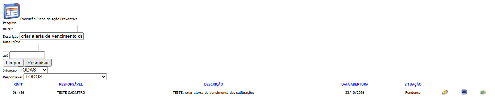
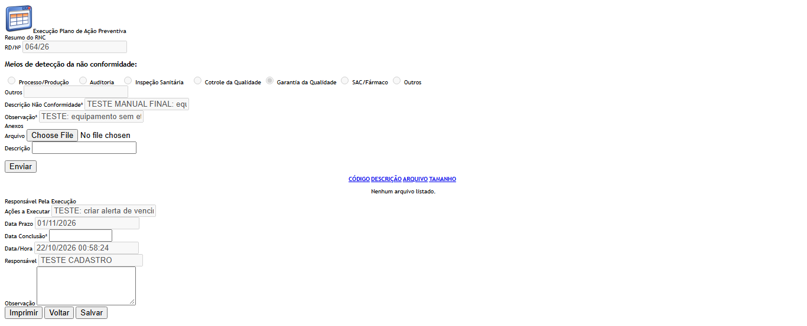
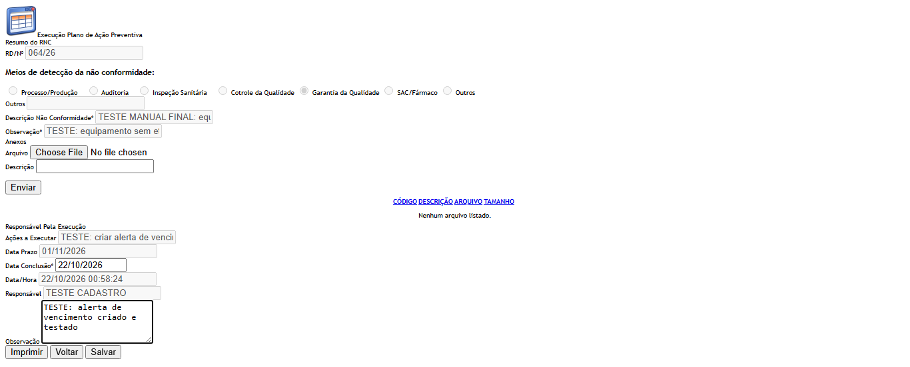
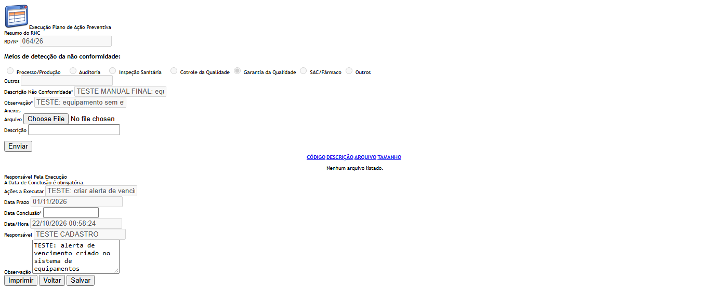
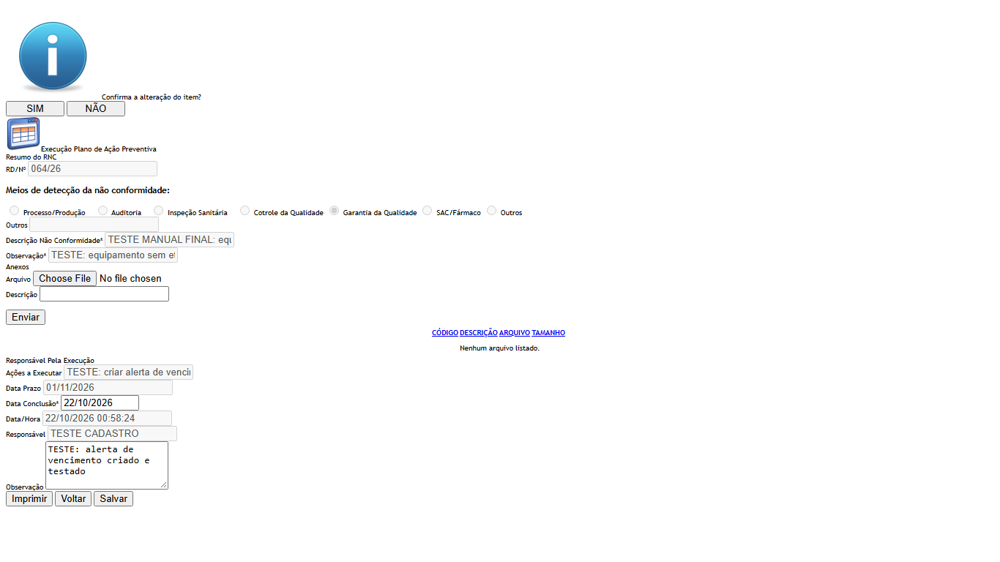
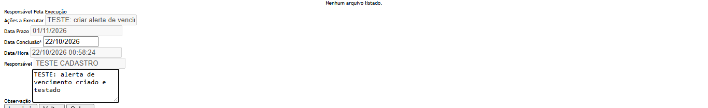
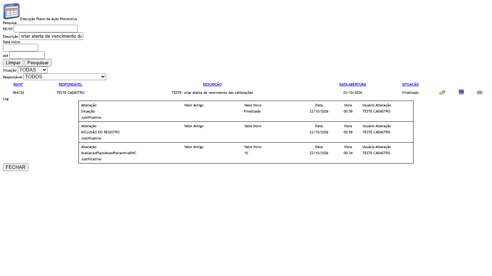

Lista (Index)
- No menu, abra Controle de Desvios › Execução Plano de Ação Preventiva. A tela abre com o bloco Pesquisa e a lista vazia: é preciso clicar em Pesquisar.
- Filtros (todos opcionais): RD/Nº, Descrição (da ação), Data Início e até (data de criação do desvio), Situação (TODAS, Pendente ou Finalizado) e Responsável (TODOS ou um usuário).
- Clique em Pesquisar. A lista traz uma linha por ação, com RD/Nº, RESPONSÁVEL, DESCRIÇÃO (da ação), DATA ABERTURA (do desvio) e SITUAÇÃO (da ação). Cada pessoa vê só as ações em que é a responsável.
- Ícones: Editar (lápis) aparece quando o desvio ainda está em Pendente Monitoramento do Plano Ação Preventiva; depois disso, no lugar do lápis aparece Visualizar (a tela travada). Log abre o histórico da avaliação da ação. Imprimir abre o PDF Relatório de CAPA do desvio.
- Limpar apaga os filtros e a lista. Não há botão Incluir: a ação nasce no Plano de Ação Preventiva.
Observado na rodada 1 (21/10/2026), para quem usa a lista:
- Digite em RD/Nº só o número do desvio, sem o ano. Com o ano (por exemplo 057/26) a lista volta vazia, com "A pesquisa não retornou nenhum resultado." (DV-GQ-026).
- Datas: com a Data Início de hoje a lista trouxe 9 ações; com Data Início e até iguais a hoje, voltou vazia; só com a data "até", também voltou vazia (DV-GQ-027). Uma data impossível, como 31/02/2026, é ignorada sem aviso e a lista sai completa.

Tela de execução (Editar)
- Clique no lápis. Abre a tela com quatro blocos: Resumo do RNC (só leitura), Anexos, Responsável Pela Execução e os botões.
- Em Responsável Pela Execução, a tela mostra a ação (Ações a Executar) e o Data Prazo, travados, e pede a Data Conclusão (obrigatória, formato dd/mm/aaaa, com calendário). A Observação é opcional. Data/Hora e Responsável vêm travados.
- Anexos (opcional): escolha o arquivo, escreva a Descrição e clique em Enviar ("Arquivo enviado com sucesso."). Os anexos ficam no desvio, não na ação.
- Clique em Salvar e confirme "Confirma a alteração do item?". Estando a Data Conclusão correta, aparece "Alteração efetuada com sucesso.", a tela trava e ficam só Imprimir e Voltar. A ação passa a Finalizado.
- Se a data estiver vazia ou for futura, aparece uma faixa vermelha no bloco Responsável Pela Execução e nada é gravado.
- Se a ação não é sua, a tela abre travada, sem Salvar, com Imprimir e Voltar.
- Salvar de novo uma ação já concluída é permitido: o botão aparece de novo para o responsável e a gravação refaz a data e a observação. Não há campo para justificar a alteração (o campo Justificativa só aparece, travado, se já houver texto).
- Voltar leva à lista. Imprimir abre o PDF Relatório de CAPA.
Observado na rodada 1 (21/10/2026), na tela de execução:
- Data Conclusão vazia: "A Data de Conclusão é obrigatória." (CT-GQ-N11-05). Data de amanhã: "A Data de Conclusão não pode ser maior que a data atual." (CT-GQ-N11-06).
- Uma data de 60 dias atrás (22/08/2026, anterior à abertura do desvio) foi aceita sem aviso (CT-GQ-N11-07; DV-GQ-025).
- Depois de concluir a primeira e a segunda ação, a situação do desvio continuou Pendente Monitoramento do Plano Ação Preventiva, e cada ação ficou Finalizado (CT-GQ-N11-10).
- Salvar de novo uma ação já concluída, com nova data e observação, foi aceito sem pedir justificativa. O histórico da ação mostra o valor antigo e o novo, e a coluna de justificativa fica vazia (CT-GQ-N11-11; DV-GQ-025).





Telas internas que existem no código
- Incluir: só o arquivo Incluir.cshtml, modelo vazio, sem ação no controlador.
- Visualizar: existe (AvaliacaoPlanoAcaoPreventivaRNCController.cs:426-490) e é chamado pelo ícone da lista quando o desvio já saiu do monitoramento. Abre a mesma tela travada.
- Cancelar: o script tem uma função Cancelar (AvaliacaoPlanoAcaoPreventivaSalvar.js:155-160), mas não há botão nem endereço de cancelamento. Não se cancela a execução.
- Excluir ou desfazer a conclusão: não existe.

Campos da tela
Lista (Index)
| Campo na tela | Tipo | Obrigatório | Regra, limite ou valores possíveis | Fonte (arquivo:linha) |
|---|---|---|---|---|
| RD/Nº | Texto | Não | "Contém" sobre o número do desvio sem o ano. Único filtro aplicado já na consulta ao banco Rodada 1: com o ano (057/26) não acha; só com o número acha (CT-GQ-F05, CT-GQ-F06; DV-GQ-026). | Bloco2/Views/AvaliacaoPlanoAcaoPreventivaRNC/Index.cshtml:24; AvaliacaoPlanoAcaoPreventivaRNCController.cs:88-89 |
| Descrição | Texto | Não | "Contém" sobre a descrição da AÇÃO (não do desvio) | Index.cshtml:29; AvaliacaoPlanoAcaoPreventivaRNCController.cs:109-110 |
| Data Início | Data | Não | dd/mm/aaaa. Compara com a data de criação do desvio (maior ou igual) Rodada 1: com a Data Início de hoje a lista trouxe 9 ações; data impossível (31/02/2026) é ignorada sem mensagem (CT-GQ-F09; DV-GQ-027). | Index.cshtml:35; AvaliacaoPlanoAcaoPreventivaIndex.js:3-4; AvaliacaoPlanoAcaoPreventivaRNCController.cs:112-113 |
| até (Data Fim) | Data | Não | dd/mm/aaaa. Compara com a data de criação do desvio (menor ou igual, sem somar um dia) Rodada 1: Data Início e até iguais a hoje devolveram 0 linhas, e só a data até também devolveu 0 (CT-GQ-F08; DV-GQ-027). | Index.cshtml:39; AvaliacaoPlanoAcaoPreventivaRNCController.cs:115-116 |
| Situação | Lista | Não | TODAS (0), Pendente, Finalizado. É a situação da ação | Index.cshtml:50-56; Bloco2/Models/AvaliacaoPlanoAcaoPreventivaIndexModel.cs:46-53; AvaliacaoPlanoAcaoPreventivaRNCController.cs:118-119 |
| Responsável | Lista | Não | TODOS ou um usuário do Principal. O filtro não tem efeito: o valor é enviado, mas o servidor não o usa (o parâmetro idresponsavel não é lido) e a lista já é só das ações do usuário conectado | Index.cshtml:60; AvaliacaoPlanoAcaoPreventivaIndex.js:99; AvaliacaoPlanoAcaoPreventivaRNCController.cs:76,121-122 |
| Coluna RD/Nº | Texto (resultado) | Não se aplica | Número do desvio com o ano | AvaliacaoPlanoAcaoPreventivaIndex.js:37; AvaliacaoPlanoAcaoPreventivaIndexModel.cs:61 |
| Coluna RESPONSÁVEL | Texto (resultado) | Não se aplica | Nome do responsável da ação | AvaliacaoPlanoAcaoPreventivaIndex.js:38; AvaliacaoPlanoAcaoPreventivaIndexModel.cs:66 |
| Coluna DESCRIÇÃO | Texto (resultado) | Não se aplica | Descrição da ação | AvaliacaoPlanoAcaoPreventivaIndex.js:39; AvaliacaoPlanoAcaoPreventivaIndexModel.cs:62 |
| Coluna DATA ABERTURA | Data (resultado) | Não se aplica | Data de criação do desvio, dd/MM/aaaa | AvaliacaoPlanoAcaoPreventivaIndex.js:40; AvaliacaoPlanoAcaoPreventivaIndexModel.cs:30-38 |
| Coluna SITUAÇÃO | Texto (resultado) | Não se aplica | Pendente ou Finalizado, da ação | AvaliacaoPlanoAcaoPreventivaIndex.js:41; AvaliacaoPlanoAcaoPreventivaIndexModel.cs:64 |
Tela de execução (Editar)
| Campo na tela | Tipo | Obrigatório | Regra, limite ou valores possíveis | Fonte (arquivo:linha) |
|---|---|---|---|---|
| Id do desvio (oculto) | Número | Preenchido pelo sistema | Id do desvio aberto | Bloco2/Views/AvaliacaoPlanoAcaoPreventivaRNC/Editar.cshtml:46 |
| Resumo do RNC (RD/Nº, Meios de detecção, Outros, Descrição Não Conformidade, Observação) | Textos e opções travados | Não | Mesmos campos da tela Plano de Ação Preventiva; ver as sete opções de meio de detecção naquele resumo | Bloco2/Views/Shared/_PartialRegistroNC.cshtml:12-103 |
| Arquivo (Anexos) | Arquivo | Sim, para enviar | Sem lista de tipos nem limite de tamanho | Editar.cshtml:56-58; UI/Views/Shared/_UploadArquivo.cshtml:76 |
| Descrição (Anexos) | Texto | Sim, para enviar | Mensagem "A descrição não foi informada." se vazia | UI/Views/Shared/_UploadArquivo.cshtml:82; UI/Controllers/UploadController.cs:129 |
| Id da ação (oculto) | Número | Preenchido pelo sistema | Identifica a ação executada | Editar.cshtml:97 |
| Ações a Executar | Texto travado | Não | Descrição da ação, vinda do plano | Editar.cshtml:99-100 |
| Data Prazo | Texto travado | Não | Prazo da ação, vindo do plano | Editar.cshtml:103-104 |
| Data Conclusão | Data | Sim | dd/mm/aaaa com máscara e calendário. Não pode ficar vazia nem ser maior que a data/hora atual. Sem relação com o prazo: aceita data depois do prazo e antes da criação do plano Rodada 1: vazia e futura são recusadas (CT-GQ-N11-05, N11-06); uma data de 60 dias atrás, anterior à abertura do desvio, foi aceita sem aviso (CT-GQ-N11-07; DV-GQ-025). | Editar.cshtml:109-110; AvaliacaoPlanoAcaoPreventivaSalvar.js:77-78; Domain/Service/AvaliacaoPlanoAcaoPreventivaValidator.cs:25-37 |
| Data/Hora | Texto travado | Não | Hora em que a tela foi aberta (ou a da avaliação anterior). É gravada como data da avaliação: vem do navegador, e não do servidor | Editar.cshtml:79,87,113-114; AvaliacaoPlanoAcaoPreventivaSalvar.js:101; AvaliacaoPlanoAcaoPreventivaRNCController.cs:262 |
| Responsável | Texto travado | Não | Mostra o nome de quem está com a tela aberta, mesmo quando outra pessoa executou antes (o controlador troca o nome do avaliador pelo do usuário conectado) | Editar.cshtml:117-118; AvaliacaoPlanoAcaoPreventivaRNCController.cs:192,196 |
| Observação | Texto (4 linhas) | Não | Texto livre, sem tamanho máximo (coluna NVARCHAR(MAX)) | Editar.cshtml:123-124; DB/TBL_AVALIACAO_PLANO_ACAO_PREVENTIVA_RNC.sql:4 |
| Justificativa | Texto travado | Só aparece se já existir texto | Nenhuma tela preenche esse campo; só mostra o que já estiver gravado Rodada 1 (CT-GQ-N11-11): ao regravar uma conclusão a tela não pediu justificativa e a coluna de justificativa do histórico da ação ficou vazia (DV-GQ-025). | Editar.cshtml:127-135; AvaliacaoPlanoAcaoPreventivaSalvar.js:99 |
Botões e ações
| Botão ou ação | Quando aparece | O que faz | Para onde leva o desvio | Fonte |
|---|---|---|---|---|
| Pesquisar | Sempre | Carrega a lista das ações do usuário conectado | Não muda o desvio | Index.cshtml:44; AvaliacaoPlanoAcaoPreventivaIndex.js:23-78 |
| Limpar (filtros) | Sempre | Esvazia os filtros, o Responsável e a lista | Não muda o desvio | Index.cshtml:43; AvaliacaoPlanoAcaoPreventivaIndex.js:79-87 |
| Editar (lápis) | Desvio em Pendente Monitoramento do Plano Ação Preventiva | Abre a tela de execução da ação | Continua em Pendente Monitoramento do Plano Ação Preventiva | UI/Helpers/GerenciadorAcessoTelaAvaliacaoPlanoAcaoPreventivaIndex.cs:12-20; AvaliacaoPlanoAcaoPreventivaIndex.js:43-46 |
| Visualizar (ícone) | Desvio em qualquer outra situação (por exemplo, já Finalizado) | Abre a tela travada | Não muda o desvio | UI/Helpers/GerenciadorAcessoTelaAvaliacaoPlanoAcaoPreventivaIndex.cs:16-19; UI/Scripts/HSGridApi.js:277-287; AvaliacaoPlanoAcaoPreventivaIndex.js:51-54 |
| Log (histórico) | Sempre na lista | Abre o histórico da avaliação da ação (classe AvaliacaoPlanoAcaoPreventivaRNC). Para ação ainda sem avaliação, o Id é zero e o histórico sai vazio | Não muda o desvio | AvaliacaoPlanoAcaoPreventivaIndex.js:47-50; AvaliacaoPlanoAcaoPreventivaIndexModel.cs:68 |
| Imprimir (ícone) | Sempre na lista | Abre o PDF Relatório de CAPA | Não muda o desvio | AvaliacaoPlanoAcaoPreventivaIndex.js:55-58; AvaliacaoPlanoAcaoPreventivaRNCController.cs:343-370 |
| Enviar (anexo) | Tela de execução não travada | Envia o arquivo para a lista de anexos do desvio | Não muda a situação | Editar.cshtml:56-58 |
| Salvar | Tela de execução, só quando o usuário conectado é o responsável da ação | Pede confirmação, confere a data e grava a conclusão da ação Rodada 1: data vazia e data futura são recusadas (CT-GQ-N11-05, N11-06); data antiga é aceita (N11-07); salvar de novo uma ação já finalizada é aceito sem justificativa (N11-11); DV-GQ-025. | O desvio não muda; a ação vai de Pendente para Finalizado Rodada 1 (CT-GQ-N11-10): depois de concluir as duas ações o desvio continuou em Pendente Monitoramento do Plano Ação Preventiva. | Editar.cshtml:143-146; AvaliacaoPlanoAcaoPreventivaRNCController.cs:198-204; AvaliacaoPlanoAcaoPreventivaSalvar.js:135-153 |
| Imprimir (tela) | Sempre na tela | Abre o PDF Relatório de CAPA | Não muda a situação | Editar.cshtml:141; AvaliacaoPlanoAcaoPreventivaSalvar.js:260-262 |
| Voltar | Sempre na tela | Volta para a lista, sem salvar | Não muda a situação | Editar.cshtml:142; AvaliacaoPlanoAcaoPreventivaSalvar.js:256-258 |
| Lixeira e clipe do anexo | Anexo na lista, tela não travada | Marca o anexo para remover ao salvar; abre o arquivo | Não muda a situação | UI/Views/Shared/_GridAnexos.cshtml:51-60 |
Mensagens do sistema
| Mensagem (texto exato do código) | Quando aparece | Fonte |
|---|---|---|
| Confirma a alteração do item? | Ao clicar em Salvar | Bloco2/Script/AvaliacaoPlanoAcaoPreventivaSalvar.js:148 |
| Alteração efetuada com sucesso. | Conclusão da ação gravada | AvaliacaoPlanoAcaoPreventivaRNCController.cs:319; UI/Controllers/GQControllerBase.cs:95 |
| A Data de Conclusão é obrigatória. | Salvar sem data de conclusão (faixa no bloco Responsável Pela Execução) Texto visto na tela em 21/10/2026 (CT-GQ-N11-05). | Domain/Service/AvaliacaoPlanoAcaoPreventivaValidator.cs:27 |
| A Data de Conclusão não pode ser maior que a data atual. | Data de conclusão depois de agora Texto visto na tela em 21/10/2026 (CT-GQ-N11-06). | AvaliacaoPlanoAcaoPreventivaValidator.cs:34 |
| Entidade de domínio não pode ser nula. | Avaliação não montada na gravação (caso raro) | AvaliacaoPlanoAcaoPreventivaValidator.cs:18 |
| Ocorreu um erro inesperado. | Erro não previsto ao gravar, ou ao abrir a tela (ação não encontrada, desvio sem plano); no segundo caso aparece na lista | AvaliacaoPlanoAcaoPreventivaRNCController.cs:337,215; UI/Controllers/GQControllerBase.cs:93 |
| Ocorreu um erro interno não esperado. | O servidor devolve erro técnico ao navegador | UI/Scripts/HSApi.js:23 |
| Arquivo enviado com sucesso. | Anexo recebido | UI/Views/Shared/_UploadArquivo.cshtml:44 |
| O arquivo não foi informado. / A descrição não foi informada. / Nenhuma informação foi enviada. | Enviar anexo incompleto | UI/Controllers/UploadController.cs:127-129 |
| Nenhum arquivo listado. | Lista de anexos vazia | UI/Views/Shared/_GridAnexos.cshtml:28 |
| A pesquisa não retornou nenhum resultado. | Lista vazia Rodada 1: aparece também quando se busca RD/Nº com o ano (DV-GQ-026) e com datas de um só dia (DV-GQ-027). | UI/Scripts/HSGridApi.js:209 |
| Não foi possível obter as solicitações mudanças | Erro ao pesquisar (texto copiado de outra tela; o usuário vê só o erro genérico) | AvaliacaoPlanoAcaoPreventivaRNCController.cs:146 |
| Não foi possível imprimir o RNC | Erro ao gerar o PDF | AvaliacaoPlanoAcaoPreventivaRNCController.cs:368 |